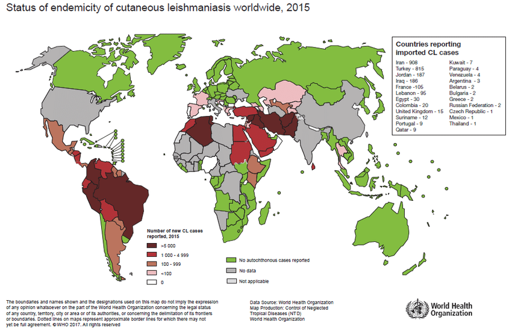

Panorama Mundial da Doença
Estima-se que a Leishmaniose (tegumentar e visceral) hoje apresenta uma prevalência de 12 milhões de casos no mundo, sendo que 350 milhões de pessoas estão ameaçadas de contrair a doença em 88 países, 72 dos quais estão localizados em países em desenvolvimento.

Panorama no Brasil
A leishmaniose tegumentar no Brasil até a década de 1940 estava intimamente relacionada com a penetração do homem em zonas de florestas em desbravamento, pois a derrubada de matas para o plantio, a construção de estradas de rodagem, ferrovias, hidrelétricas e implantação de povoados favoreciam o contato do homem com os reservatórios e vetores de Leishmania. 5,6 Na região amazônica, ainda hoje observa-se o padrão epidemiológico de transmissão fundamentado no contato do homem com o ambiente silvestre, onde a doença predomina em indivíduos adultos do sexo masculino.